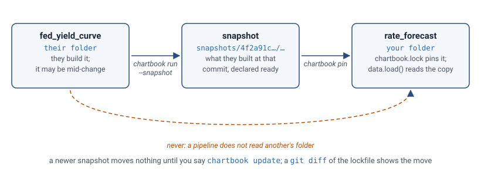
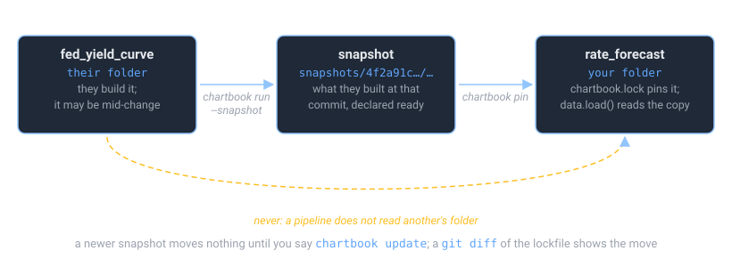

Depending on Another Pipeline#
A pipeline often builds on data another pipeline made. ChartBook lets it do that without reading the other pipeline’s folder: the other pipeline’s owner declares a build ready, and you pin that build and read it by name. (Before there is any build to pin, a notebook can read the folder, with a loud warning; see Reading before you pin.)


Three words carry the whole arrangement, and Vocabulary defines them. A snapshot
records what one pipeline made: every asset it built at one commit, with its content hash,
kept in the store (~/.chartbook/store, or a folder a team shares). A pin freezes which
snapshot of a dependency you read, and the lockfile, chartbook.lock, records the pins. The
lockfile is committed and has no timestamp on purpose: a git diff of it means “a pin moved” and
nothing else.
Declare it#
Say which pipeline. When it is in another repository, as it usually is, name it by its ID:
[dependencies]
"ftsfr/fed_yield_curve" = {}
[models.rate_forecaster]
path = "./_models/rate_forecaster.joblib"
trained_on = ["fed_yield_curve:treasury_rates"]
chartbook add ftsfr/fed_yield_curve writes that line for you. Its snapshots are found in the
store by that ID, so nothing of the other repository has to be on your disk, and the same line
works on any machine whose store has them: a colleague’s, or your other computer, when the store
is shared (a folder on a shared disk or in a synced folder, or a bucket; see
In CI, and on a shared store).
When the two pipelines are in one repository, name the other by its folder instead:
[dependencies]
"ftsfr/fed_yield_curve" = { path = "../fed_yield_curve" }
Its snapshots are then found by the commit that folder is on, which is your repository’s own, so
every clone of the repository has the folder too. A path into another repository works on your
machine only: chartbook check warns about one, and shows the line that names it by its ID.
chartbook check warns while you have not pinned it yet, and for a path it also confirms that
the other pipeline is there and that it declares that dataframe.
They declare a build ready#
The other pipeline’s owner says when a build is ready. In its folder, with everything committed:
$ chartbook run --snapshot # build it, and copy what it built into the store, labelled with the commit
That is a snapshot, and it is what of theirs you read. Their folder is not read, except as the warning below says.
(chartbook run and then chartbook snapshot are nearly the same two steps, apart; --snapshot
checks that everything is committed before it builds, and the snapshot records that the build
ran in the same command.)
You pin it, and read it by name#
$ chartbook pin # pin their newest snapshot; write chartbook.lock
$ git add chartbook.lock
from chartbook import data
rates = data.load("fed_yield_curve:treasury_rates") # the pinned copy
path = data.path("fed_yield_curve:treasury_rates") # or just where it is
What you get is the build they declared ready, not whatever is in their _data/ folder this
minute. They can rebuild, or be half-way through a change, and your results do not move.
When they have made a newer snapshot and you want it:
$ chartbook update # move the pins; chartbook.lock shows the change in a diff
Who |
Does |
When |
|---|---|---|
The other pipeline’s owner |
|
When a build is ready for others |
You |
|
To start depending on it |
You |
|
When you want their newer snapshot |
Reading before you pin#
In a notebook, or any script you run yourself, a read does what you most likely meant and says
what it did. In a build under chartbook run, which sets CHARTBOOK_BATCH=1 for it, only a pin is
read, and the rest are errors, since nothing would record what was read.
What you read |
In a notebook |
In a build under |
|---|---|---|
A dependency that is pinned |
The pinned copy |
The pinned copy |
A dependency declared and not pinned |
Pins its newest snapshot now and says so, as |
|
A pipeline not in |
Its newest snapshot, with a warning that nothing records it |
An error |
This pipeline itself, through the catalog that lists its folder |
Its own file, as a name of its own resolves |
The same |
This pipeline’s own ID (or the end of it), with no dependency known to be that pipeline |
An error: read its own assets by their own names |
An error |
One with no snapshot, whose folder is here |
Its working version, with a loud warning |
An error |
>>> data.load("acme/rates:treasury")
acme/rates: pinned to its newest snapshot, 3f2a9c1, made 2026-10-16 22:06 UTC (chartbook.lock). `chartbook update acme/rates` moves it.
A pin on the first read is a note of what you read, which chartbook update moves whenever you
like; commit chartbook.lock with your pipeline. A git dependency is never fetched by a read:
chartbook pin or chartbook run fetches it. chartbook add acme/yields declares a pipeline
the warning names. A dependency declared under another key (yc = { path = "../yield_curve" })
is found by its ID too. When the store cannot be read, a bare name is more than one pipeline’s, or
the store has snapshots of the pipeline and none a pin can take (two repositories claim its ID, the
only one is dated ahead, none is at the commit asked for), the read is an error, never a read of a
folder. A read that could not pin tries again once the store’s snapshots change. A script other than build (chartbook run lab)
is as interactive as the shell it runs from.
Outside any pipeline, in a folder with no chartbook.toml in it or above it, a read is a
one-off exploration: data.load("acme/rates:treasury") and
data.load(pipeline="acme/rates", dataframe="treasury") read its newest snapshot, and say nothing.
Only a read of a working folder, when there is no snapshot, warns, since that warning is about
which data you got. A notebook in a catalog’s folder reads this way too: a catalog has no
dependencies. Which pipeline a call is in is found from the file that makes it, then from the
working directory, by either form, so a script in a pipeline’s folder reads by that pipeline’s
rules wherever it is run from. In a build (CHARTBOOK_BATCH=1) outside any pipeline, a read is
an error, since nothing would record it.
The rate_forecast example does exactly this, with a model trained on the yield_curve
example’s data. [dependencies] and chartbook snapshot have every detail.
Building your pipeline#
Say how the pipeline is built, in its chartbook.toml:
[scripts]
build = "doit"
Then one command pins what you depend on, if nothing is pinned yet, and builds:
$ chartbook run
ftsfr/rate_forecast: pinning what it depends on
ftsfr/fed_yield_curve: 3 pinned
From its snapshot at 4f2a91c, made 2026-10-13 18:22 UTC.
Wrote chartbook.lock.
ftsfr/rate_forecast: build
Ran build in 1 pipeline(s).
chartbook run does not build ftsfr/fed_yield_curve, and does not read its folder. That folder
is somebody’s work, perhaps in the middle of a change. Whoever owns it builds it and makes the
snapshot.
It never moves a pin either. If the other pipeline has a newer snapshot, yours is still built
against the one you pinned, and the command tells you so. chartbook update is what moves a pin.
See chartbook run.
A dependency can also be a git repository, { git = "https://…", rev = "v1.2" }, for one that is
not on your disk. chartbook pin clones it, and can pin only what that repository keeps in git:
reference data and models that are committed. For data that the other pipeline builds, use
chartbook run, which builds it once in a clean copy of that commit.
What the site and the index say#
Every asset page shows a provenance panel: what the asset was made from and at which hashes,
and what uses it. For a model, the panel and the page say when the data it was trained on has moved
since, so that an out-of-date model is seen before it is used. The index records the same facts
(inputs, pinned_inputs, trained_with, inputs_now, stale_inputs), and chartbook index diff between two builds says “pins moved” or “out of date” in words. See
Documenting a Pipeline for the panel and How the Build Works for the index.
Models have versions#
A model’s bytes become a version when a snapshot first holds them, named by the first twelve
digits of their hash (more, if two versions would otherwise share a name). [models.x.aliases] gives a version a label such as champion, and another
pipeline reads it as fed_yield_curve:model/x@champion: the lockfile pins the label to a version,
chartbook update moves it when the label does. chartbook path model/x@<version> gives the
path of any version on this machine. chartbook pin has the details, and
Design: models the reasoning.